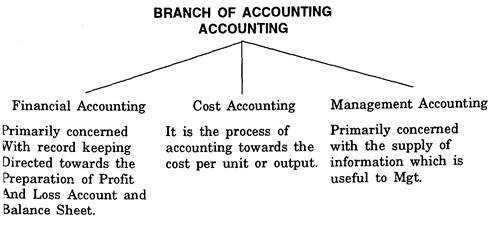
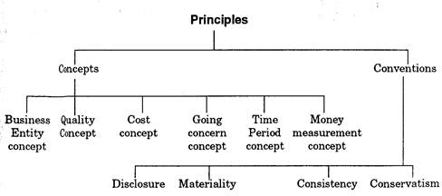
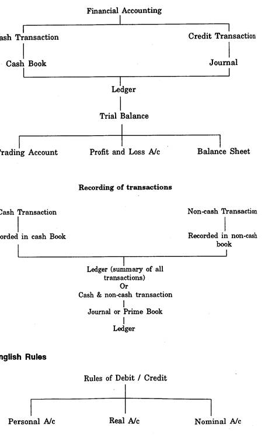

ARM402 :: Lecture 24 :: ACCOUNTING SYSTEM AND BOOK KEEPING PRINCIPLES

A student desires to know the progress he makes in the various subjects Le has taken for study. Similarly a businessman likes to know the progress he makes in his business. He has to prepare profit and loss and Balance sheet only from the books of accounts maintained by him.
A systematic record of the daily activities of a business is to present a complete financial picture is known as accounting or in its elementary stages as book-keeping. It is difficult to get a clear distinction between book keeping and accounting. Book-keeping is to keep the books and make the accounting records.
Accounting means to decide how such records shall be kept and to apprise the significance of the information disclosed.
Meaning of accounting and Book Keeping
The American Institute of Certified public Accounts Committee defines Accounting as, "The art of recording, classifying summarising in a significant manner and in terms of money , transactions and events which are, in part it least, of a financial character and interpreting results there of'. Accounting and Accountancy are often synonymous. Different uses of accounting have developed to fulfil the various objectives.
According to R.N.Charter “Book-keeping is art of correct by recording in books of accounts all those business transactions that result in the transfer of money or moneys worth.

1. Keeping systematic records i.e. to keep the records of financial transactions to prepare final accounts.
2. Protecting properties of the business. An unauthorized dissipation of assets of the concern will bring it to the threshhold of un-solvency. An accountant, those have to design such a system of accounting as will protect its assets. from an unjustified use.
3. Communicating the result i.e. the results of trained from arranging of data to interested parties like proprietors, investors, creditors, employees, Govt. and researchers.
4. Meeting legal requirements i.e. accounting is a system for a concern
to meet legal requirements such as sales tax and income tax.
Groups Interested in Accounting Information
1. Owners and the Management - Owners like, sole proprietor, partner, share holder are interested to know the progress of the concern from the disclosed accounting records. To measure and evaluate the performance of the organization the management is very much of interested to know the information.
2. Potential Investors - The prospective investors are in need of detailed information about the progress of the concern because only on the basis of the information they take decisions regarding the investment to be made in the particular business.
3. Creditors - The parties who provide a firm with raw materials, goods, service by either extending credit or making loans based on the disclosed Accounting information.
4. Employees - The employees are also interested in the information to properly evaluate the salary and wage benefit packages.
5. Researchers are very keen to collecting the data for research purposes.
6. The Govt. has to collect sales tax, income tax, excise duty and other relevant taxes from the business based on the property accounts made by the concern.
METHODS OF ACCOUNTING
Single Entry System of Book Keeping
The single entry system is an incomplete method of Book Keeping. Under this system the cash Book and personal ledgers only are maintained.
i.e. Real and Nominal Account are not maintained. One may not end accounts relating to fixed assets, purchases, sales, expenses, incomes etc. Goods sold on credit will be recorded only in the account of the customers concerned.
Cash received from him, will be recorded both in the cash account and in ie account of the customer. Purchase of machinery on credit will not be corded at all till payment is made.
Double Entry System of Book Keeping
This system was invented by an Italian named LUCO PACIOLI in 1494 .D. According to this system, every transaction has got a two fold aspect. One is Benefit Receiving Aspect or Incoming aspect and the other one, Benefit Receiving Aspect or Outgoing aspect. The benefit receiving aspect is said to be Debit and the benefit giving aspect is said to be a Credit. For every transaction one account is to be debited and another account is to be credited i order to have a complete record of the same. Therefore every transaction affects two accounts in opposite direction.
Difference between Double Entry & Single Entry System |
||
Sl.No. |
Double Entry System |
Single Entry System |
01. |
Two act aspects of a transaction are recorded. |
Only one aspect of a transaction is recorded. |
02. |
For every debit there is a corresponding and equal credit. |
There may a debit without a corresponding credit and vice versa. |
03. |
Personal accounts, Real accounts and Nominal accounts are maintained properly. |
Personal Accounts and Cash account alone are maintained. |
04. |
To test the arithmetical accuracy, a Trial Balance can be prepared. |
As the ledger does not contain all accounts |
05. |
Trading Account, Profit and Loss Account and Balance Sheet can be prepared. |
They can not be prepared as it |
06. |
Accurate net profit can be calculated directly. |
Approximate net profit can be |
07. |
It involves more clerical labour. |
It involves less clerical labour. |
08. |
It is a perfect and scientific system. |
It is an imperfect way of book keeping. |
09. |
Tax authorities accept this method. |
Tax authorities do not accept it as such. |
Entries will be made in opposite direction in these two accounts. This system is called Double Entry system since it keeps records in two accounts for every transaction.
Therefore the basic principle under this system is that for every debit there must be a corresponding and equal credit and for every credit there must be a corresponding and equal debit.
Accounting Principles
The generally accepted accounting principles are the set of rules, concepts and guidelines used in preparing financial accounting reports. The accounting principles are described by various terms such as concept convector doctrines, assumptions, postulates etc., All these are synonymous except the concepts and conventions.

There are two approaches for the applications of Debit and Credit rules. 1. American approach 2. English Approach In American approach the transactions are divided into five categories.
Debit Credit
1. Capital Decrease Increase
2. Liability Decrease Increase
3. Asset Increase Decrease
4. Expenses Increase Decrease
5. Revenue Decrease Increase
Conceptual framework of financial accounting based on Double entry

Personal Account |
The receiver |
The giver |
Real Account |
What comes in |
What goes out |
Nominal Account |
All expenses & losses |
All incomes & Gains |
From the above two approaches we are following the English approach.
| Download this lecture as PDF here |